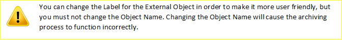

Cadalys Data Archive™
Deploy to HerokuCadalys Data Archive™ is a powerful and robust data archiving application enabling enterprises to improve performance and storage utilization by archiving older unused data out of Salesforce. The application supports both standard and custom objects, and lets you define archiving rules based on any criteria. You can also unarchive records that you need to have back in Salesforce.
To setup the application, please follow the instructions below. Cadalys is also available to help you to install the solution.
1. Deploy the app by clicking the "Deploy to Heroku" Button.
Deploy to Heroku2. Create the app in your Heroku account (for example CadalysDataArchive).

3. After the app has been deployed, you can manage it in the Heroku Dashboard by clicking the "Manage App" button.

4. Click on Heroku Connect to setup the connection with your Salesforce org.

Press the "Setup Connection" button.

5. The Heroku Connect Provision Connection screen appears
6. Click the "Next" button and then click Authorize.

7. Authorize Heroku Connect to access your Salesforce org. If asked, log in to Salesforce.
1. Install the Salesforce package by clicking the following button.
Deploy Salesforce Components2. Populate the "Archiving Setting" and "Heroku Connect Setting" Custom Setting in Salesforce.
You can fill out the custom settings manually or run the following script in the Developer Console. You can download this script here:
>>>Download script<<<
Please note, that some of the parameters should be filled with your specific values:
"Heroku Connect Setting": 'APP_NAME', 'AUTH_TOKEN'
"Archiving Setting": 'SERVICE_ENDPOINT', 'SERVICE_USER', 'SERVICE_PASSWORD'
2.1 Manual setup of the Custom Setting: Archiving Setting


2.2 Manual setup of the Custom Setting: Heroku Connect Setting

2.3 Manual setup of the Custom Setting: Heroku Connect Setting.AUTH_TOKEN
This setting is used to enable automatic Heroku mapping for Archived Objects.
In order to use this feature you must install Heroku toolbelt.
Click here to get an API Token for your Heroku instance.
Enter your token in the AUTH_TOKEN setting.
2.4 Cadalys Data Archive will automatically give you the option of archiving child objects where the relationship between the parent and children is a Master Detail relationship. If you would like the ability to archive additional child records for an object, enter the information about the child object in this Custom Setting. Enter a name for the relationship, the API name of the child object, the API name of the field on the child object that points to the parent, and the API name of the parent object:

3. Set up the Remote Site Details
3.1 Create new Remote Site Settings for the Heroku services under Setup | App Setup | Develop | Remote Access.
3.2 Create new Remote Site Settings for Metadata Api
Remote Site URL:
4. On the Heroku side create a mapping for the settings objects
4.1 Map the cadarch__Archiving_Setting__c object
Click Create Mapping.
Select the cadarch__Archiving_Setting__c object and check all fields
In the Salesforce -> Database section, select the Listen for updates using the Streaming API option.
Click Save.

4.2 Map the cadarch__Archive_Plan__c object, select all of the fields and select the Listen for updates using the Streaming API option.

4.3 If you do not setup the AUTH_TOKEN setting (2.3), you need to create a mapping for each of the objects you would like to archive.

5. Schedule the Archiving batch StartArchivingScheduler in Salesforce. You can also start the archiving process, by clicking the Run button on the Archiving Rules tab.
6. Schedule the batch DeleteArchivePlanScheduler to run once a week. It will clean-up old archiving plans. This batch should run not less than 1 hour before the Archiving batch.
7. Add the "Search Cadalys Data Archive" widget to the Home Page Layout by going to Setup | Customize | Home | Home Page Layouts.
8. If you want to see the "Search Cadalys Data Archive" widget on all of the pages, check Show Custom Sidebar Components on All Pages in User Interface settings by going to Setup | Customize | User Interface.

You are now ready to begin using Cadalys Data Archive™!
To view archived objects in Salesforce and to be able to unarchive them, please proceed with the following steps.
To see the archived objects in Salesforce, configure External objects on Heroku Connect:
1. Create a support ticket in Heroku, asking to enable External objects for your installed Cadalys Data Archive application.
2. When the ticket is processed, you will see a new tab named External Objects. Click the External Objects tab and click the "Activate" button.

3. After activation, you will receive an email with the username and password for access to your External Objects.
4. After running the archiving batch process in Salesforce, you will see the archived objects in Heroku. In order to see these archived records in Salesforce, select them in the External Objects tab. Archived objects will have an "a__" prefix.
5. In Salesforce, go to Setup | Develop | External Data Sources, Click "New External Data Source" and fill in the fields in accordance with the External Objects settings in step 3.

6. Click Validate and Sync, select the appropriate salesforce.a__* objects, and click the "Sync" button.

7. 

8. You can set up the Page Layouts for archived objects as with the Page Layouts for any object in Salesforce. You can also configure a custom ParentExtID field as an External Lookup, which will enable you to configure Related lists for Archived objects.
9. Create tabs for the external objects as desired. Please note that, as with standard Salesforce, archived object search results will be visible for those users who have access to the external object tabs. In other words, as with standard Salesforce Search, the search result for searching the Cadalys Data Archive will only show the types of records for which the User has tabs. If a User does not have a tab for "Archived Cases", for example, they will not see Archived Cases in the search results for searching the Cadalys Data Archive.
10. Add the Unarchive button to the Page Layout for any external object that you want users to be able to unarchive.
Go to Setup | Develop | External Object and choose the object.
In the "Buttons, Links, and Actions" area, click the "New Button or Link" button.
Create the Unarchive button with the parameters shown below.
>>Download Java Script<<
 GitHub
Project
GitHub
Project